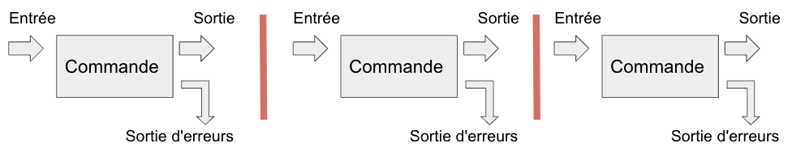

Redirections
Contents
Redirections#

Entrée standard (stdin): un fichier ou du texte (un flux de texte).
Sortie standard (stdout, “output 1”): renvoyée à l’écran par défaut et transférée via le tube.
Erreur standard (stderr, “output 2”): renvoyée à l’écran par défaut et non transférée via le tube.
Opérateurs de redirection
|: le caractère “pipe” passe le flux de texte stdin à une autre commande> file.txt: stocke le flux stdout en créant (ou écrasant) le fichier file.txt>> file.txt: stocke le flux stdout en ajoutant des lignes dans le fichier file.txt2> log.txt: stocke le flux stderr dans un fichier nommé log.txt1> file.txt 2> log.txt: stocke stdout dans un fichier et stderr dans un autre
Un exemple#
Compter le nombre de fichiers d’extension “bed” présents dans le répertoire où vous êtes
cd /shared/projects/form_2022_32/coursLinux/annotations/hg38/bed
ls -l *.bed | wc -l
bash: cd: /shared/projects/form_2022_32/coursLinux/annotations/hg38/bed: Aucun fichier ou dossier de ce type
ls: impossible d'accéder à *.bed: Aucun fichier ou dossier de ce type
0
Exercices#
Hommage à Marseille
Utilisez les commandes head pour visualiser les 51 premières lignes du fichier hg38_exons.bed et renvoyer le résultat dans less
Hommage au finistère
Utilisez les commandes head et tail pour récupérer la 29ème ligne du fichier hg38_exons.bed.
# On utilise head puis un tube qui renvoie vers less.
# Tapez q pour quitter.
head -n 51 hg38_exons.bed | less
# On récupère les 29 premières lignes avec head,
# puis on extrait de ce flux de texte la dernière ligne avec tail
head -n 29 hg38_exons.bed | tail -n 1
Demo: enchaînements de commandes#
# Obtenir la liste non redondante de chromosomes présents dans le fichier
cut -f 1 hg38_exons.bed | sort | uniq
cut: hg38_exons.bed: Aucun fichier ou dossier de ce type
# Nombre de chromosomes différents
cut -f 1 hg38_exons.bed | sort | uniq | wc -l
cut: hg38_exons.bed: Aucun fichier ou dossier de ce type
0
# Obtenir la liste des chromosomes présents dans le fichier et
# le nombre d'occurrence de chacun d'entre eux
# ‘-c=count’
cut -f 1 hg38_exons.bed | sort | uniq -c
cut: hg38_exons.bed: Aucun fichier ou dossier de ce type
# La liste des chromosomes présents dans le fichier et leur nombre trié
# par ordre décroissant (-r: reverse, -n: numeric, -k: ‘kolonne’)
cut -f 1 hg38_exons.bed | sort | uniq -c | sort -nr -k 1,1
cut: hg38_exons.bed: Aucun fichier ou dossier de ce type
Note
La commande uniq permet d’éliminer les doublons dans un flux de texte trié
Exercice I#
En quoi la commande
lessdiffère-t-elle de la commandemore? (15 pts)En utilisant la command
grepindiquez : (5 pts)Combien y-a-t-il d’exons sur le chromosome 22 ?
Combien de lignes correspondant aux exons présents sur le chromosome chr22 contiennent le terme lincRNA ?
Solution#
grep "chr22" hg38_exons.bed | wc -l
grep: hg38_exons.bed: Aucun fichier ou dossier de ce type
0
grep "chr22" hg38_exons.bed | grep "lincRNA" | wc -l
grep: hg38_exons.bed: Aucun fichier ou dossier de ce type
0
grep -c "chr22" hg38_exons.bed
grep: hg38_exons.bed: Aucun fichier ou dossier de ce type
grep "chr22" hg38_exons.bed | grep -c "lincRNA"